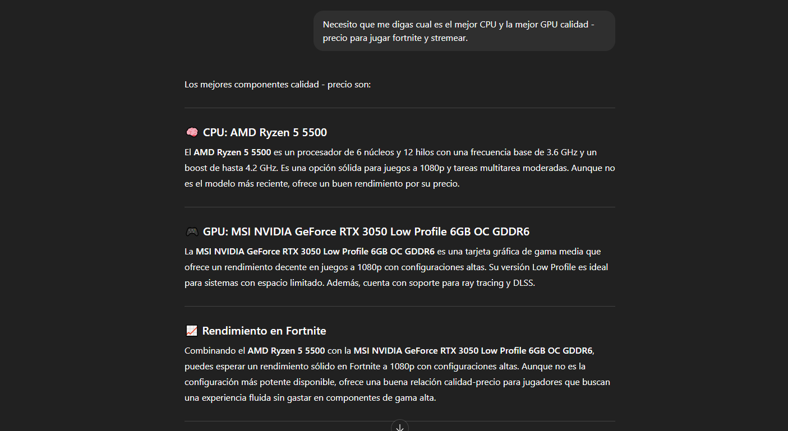
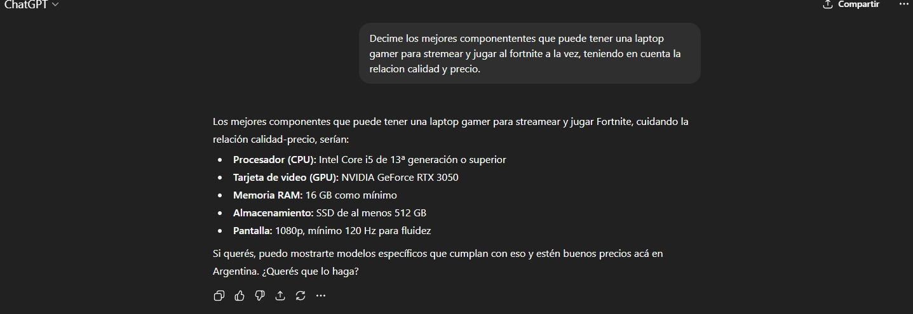

Fortnite
- Minimos: CPU: Core I3-3225 3.3Ghz, GPU: Intel HD 4000 o equivalente, RAM: 4GB, SO: windows 7/8, almacenamiento: 70GB
- Recomendados: CPU: Core i5-7300U 3.5GHZ o superior, CPU: Nvidia gtx 960, ram: 8GB, SO: windows 10, almacemantiento: 70GB
Trabajo Practico N1: Streaming de videojuegos
Profesores: Bioing. Ismael Cassi (ADJ) y Lic. Paolo Orundés Cardinali (JTP)
Integrantes del grupo: Joaquin Salzmann, Maximo Beker y Alejo Barrios
Comision: Miercoles 15hs
Año lectivo: 2025
Fortnite - Juego de ritmo y accion, multijugador en linea que combina el juego del ultimo hombre en pie con los elementos de supervivencia y exploracion
Pubg: Diferencias con el juego principal: Pubg es mas realista y tactico, mientras que fortnite mas rapido. Fortnite tiene construccion de estructuras, pubg no. Pubg suele tener graficos mas realistas

Total estimado: $817.100 ARS
Justificacion:Elegi armar esta PC ya que tiene un muy buen equilibrio entre precio y rendimiento para stremear y jugar al mismo tiempo
Prompt: Necesito que me digas cual es el mejor CPU y la mejor GPU calidad - precio para jugar fortnite y stremear
Total estimado: $1.400.000 ARS (1000 USD) Pro notebooks
Justificacion:Elegi esta laptop gamer ya que me parecio que cuenta con buenas especificaciones para lo necesario y tambien ya cuenta con una pantalla de 144hz lo que hace mejor la jugabilidad.
Prompt: Decime los mejores componententes que puede tener una laptop gamer para stremear y jugar al fortnite a la vez, teniendo en cuenta la relacion calidad y precio
Total estimado: 1.200.000 ARS Megatone
Justificacion: Esta laptop gamer es una buena opcion ya que cuenta con componentes de buena calidad y superan los requisitos minimos para stremear y jugar
Precio: $1.267.865
Enlace al producto: Ver producto en venex
Justificacion del descarte: La laptop seleccionada tiene una GPU dedicada que aporta un rendimiento mucho superior en juegos y streaming. Además, cuenta con una pantalla de 144Hz, mientras que la descartada tiene una pantalla más grande y luminosa pero con una menor tasa de refresco. El enfoque de la opción descartada suele ser más empresarial. Por casi el mismo precio, resulta más conveniente comprar la opción elegida.
Esta laptop gamer ofrece un rendimiento solido y estable para jugar fortnite y realizar transmisiones en vivo. El procesador Intel Core i5-12450H y la gpu rtx 2050 permiten alcanzar tasas de cuadros fluidas y estables en 1080p garantizando calidad y jugabilidad estable.
Prompt: Que componentes son buenos para stremear y jugar fortnite a la vez en una laptop?

| Características | AMD Ryzen 9 7950X | Intel Core i9-13900K |
|---|---|---|
| Núcleos / Hilos | 16 / 32 | 24 / 32 |
| Frecuencia base / turbo | 4.5 / 5.7 GHz | 3.0 / 5.8 GHz |
| Cache L3 | 64 MB | 36 MB |
| Consumo (TDP) | 170 W | 125 W (PL1), 253 W (PL2) |
| Socket compatible | AM5 | LGA 1700 |
| Gráficos integrados | No | Intel UHD 770 |
| Rendimiento en juegos 1080p | Muy alto | Muy alto, ligeramente superior |
| Precio aproximado | $750.000 | $780.000 |
Fuente consultada: Ver producto en mercado libre
Conclusion: Los datos son correctos, hay una variacion en el precio. (AMD RYZEN 9 7950X $1.054.099) (I9-1390K $1.393.561). Elegiria la opcion de Intel para el maximo rendimiento en juegos ya que la opcion de AMD es mas para productividad o multitarea.
Explicación técnica: El bitrate indica la cantidad de bits que se transmiten por segundo en un flujo de datos digitales, como un video o una transmisión en vivo. Este valor determina la calidad del contenido y el ancho de banda necesario para reproducirlo correctamente.
Explicación en lenguaje común: El bitrate es la cantidad de informacion y datos que se envian por segundo.
Explicación técnica: La latencia se refiere al retraso temporal entre el envío de una señal y la recepción de la respuesta. Es un parámetro crítico en aplicaciones en tiempo real como los videojuegos en línea, donde incluso unos pocos milisegundos pueden afectar la interacción del usuario.
Explicación en lenguaje común: La latencia es por ejemplo: si estás jugando y disparás, pero el disparo se ve unos segundos después, eso es latencia. Cuanto menor latencia mejor ira el juego.
Explicación técnica: Una GPU (Unidad de Procesamiento Gráfico) se utiliza para renderizar y acelerar gráficos, imágenes y videos en dispositivos.
Explicación en lenguaje común: La GPU se encarga de renderizar los graficos.
Prompt: genera una imagen de una persona stremeando desde una laptop gamer.
La inteligencia artificial me ayudó mucho en este trabajo. Me permitió ahorrar tiempo y entender mejor conceptos técnicos que a veces resultan difíciles
En algunos casos noté que podía haber datos un poco desactualizados. Para resolverlo, busqué la información en páginas oficiales y así pude confirmar los valores reales.
Prefiero buscar información manualmente cuando necesito datos muy recientes como por ejemplo los valores actualizados en los precios de los compontentes.